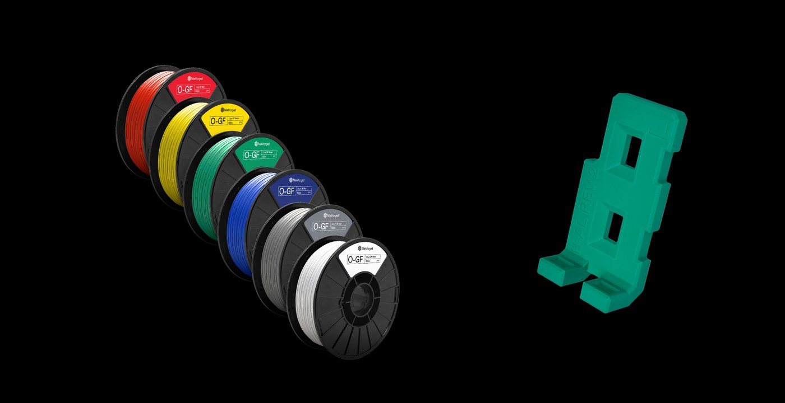
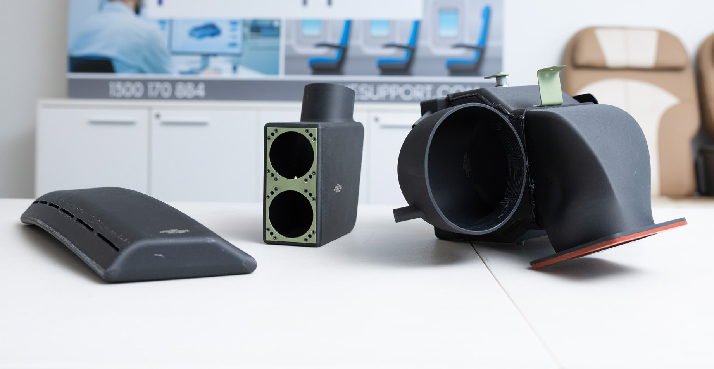
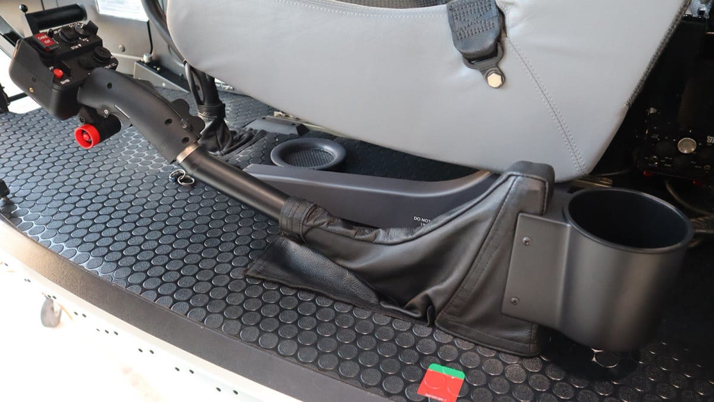
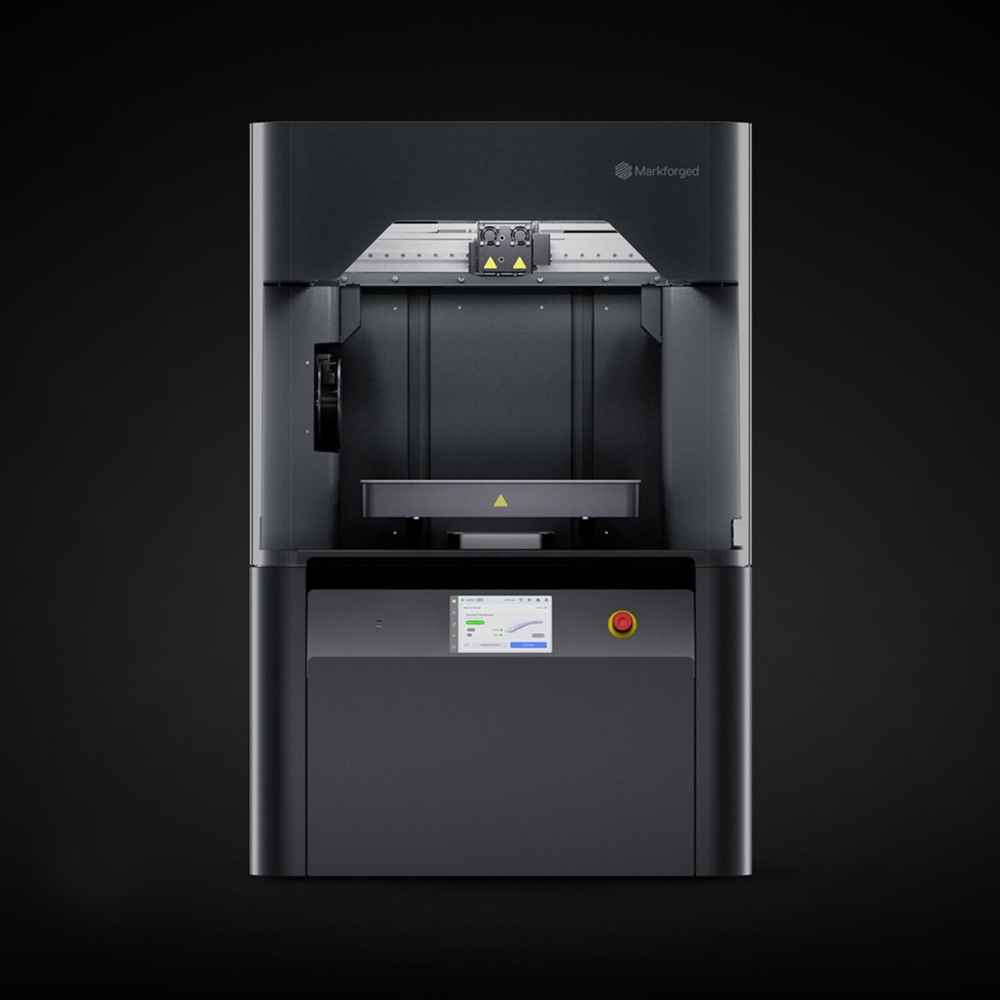

FX10
Graham Rahal Performance：手工 20–40 小时的夹具，改成隔夜印好
超跑改装 ・ 美国
师傅过去要花 20 到 40 小时切割、成形、焊接一组夹具、支架或排气零件；导入 FX10 后，CAD 画好、隔夜打印完成、隔天就用。为 1,000 匹马力的混动超跑 Lamborghini Revuelto 制作 X-pipe 排气时，GRP 用 FX10 以 316L 不锈钢打印出法兰，表面可直接焊接，几乎不需后加工。
20–40 小时 → 隔夜原厂案例（英文） →

数字取自 Markforged 原厂案例原文；机型照原文标示，并非每一案都是 FX10。
产线不停，夹具就不能先倒下。超跑改装厂、整车组装线、跨国传动系统供应商，三家都把夹具改成自己印。
师傅过去要花 20 到 40 小时切割、成形、焊接一组夹具、支架或排气零件；导入 FX10 后，CAD 画好、隔夜打印完成、隔天就用。为 1,000 匹马力的混动超跑 Lamborghini Revuelto 制作 X-pipe 排气时，GRP 用 FX10 以 316L 不锈钢打印出法兰，表面可直接焊接，几乎不需后加工。

同一条线同时组装多个车型，夹具之间只差几毫米。改用 Onyx GF 后，每个车型配一种颜色，操作员第一次伸手就拿对；保险杠 QR 追踪标签的定位夹具，精度做到 0.1 mm。

全球传动与动力系统供应商 Dana 在七个国家部署 Markforged 打印机。意大利 Rovereto 工程中心用 X7 印的复合材料夹具，上线超过一年没有故障，每件夹具成本降 70%、交期缩短 90%。

六色 Onyx GF 让夹具一眼看出属于哪条线、哪个版本、哪个危险区；Subaru 印第安纳厂的色码夹具就是用它印的。
飞上去之前，每一件都要过关。一家取得澳大利亚民航批准，一家符合美国 FAA 要求，一家把测量搬进打印过程。

Plane Support 以 FX10 为核心建立航空航天增材制造实验室，用具批次追溯的阻燃材料 Onyx FR-A 印 Bell 214B 机舱空调风管，取得澳大利亚民航安全局（CASA）批准，可用增材制造生产这项零件。合作伙伴 McDermott Aviation 拥有全球最大的 214B 机队，主要投入森林火灾空中灭火。
CMS 为私人飞机与公务机维修、升级与替换客舱管理和机上娱乐系统。2019 年成立后购入两台 X7，以 UL 94 V-0 阻燃等级的 Onyx FR 打印机上娱乐系统改装件等最终使用零件，符合美国联邦航空管理局（FAA）要求。

以碳纤维增强复合材料零件取代铝件，为直升机减重；并用 Markforged 的 Blacksmith 检测软件在打印过程中自动测量。原本每件人工测量要 30 到 45 分钟，导入后平均每件省下约 30 分钟。

平时用连续碳纤维复合材料印夹具与零件；换上 Metal Kit 金属打印引擎，同一台打印 316L、17-4PH 不锈钢与 H13 工具钢，金属件再经 Wash-1 清洗与 Sinter-2 烧结完成。打印头上的激光测微仪边印边量，自动调平、自动换料，工程师与现场操作员都能上手。
同时要做复合材料与金属零件？看 FX10 Sinter-2 Bundle →
寄一个零件图档，我们可以安排测试打印与 FX10 机台展示，并提供报价。来信请附产业、零件用途、预计材料与所在地区（台湾、中国、香港、越南）。